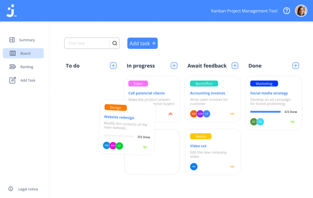
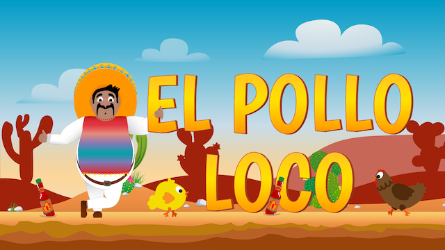

Join
JavaScript | HTML | CSS A task management board inspired by the Kanban System. Create and organize tasks using drag and drop functions, assign users and categories.El Pollo Loco
JavaScript | OOP | HTML | CSS A simple Jump-and-Run game based on an object-oriented approach. Help Pepe against the evil killer chicken.
